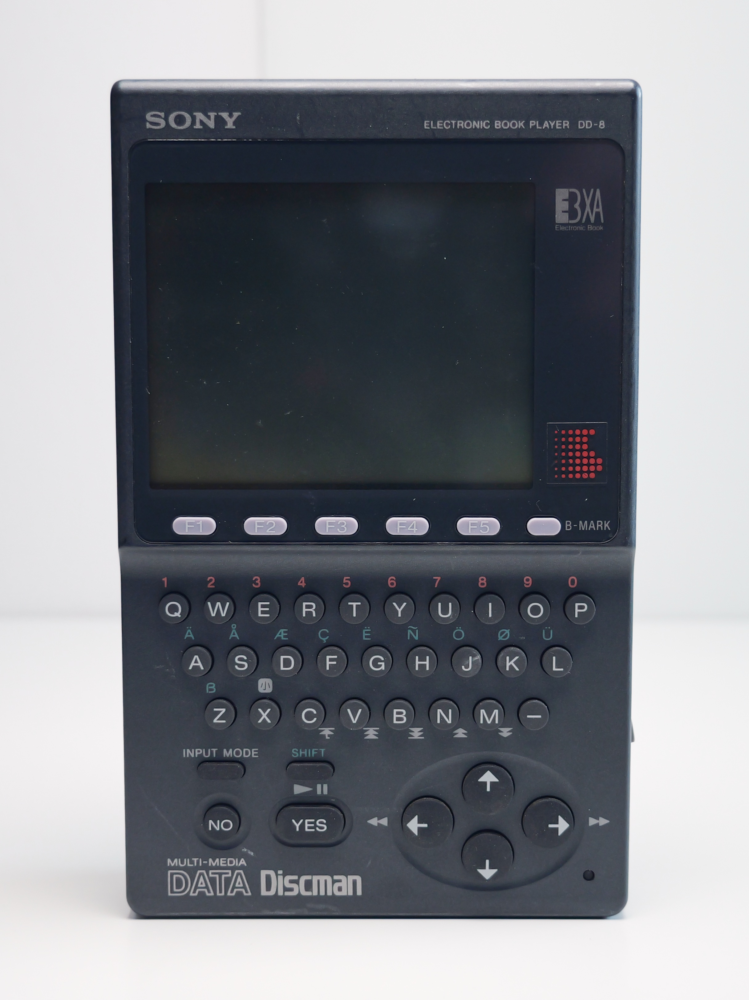
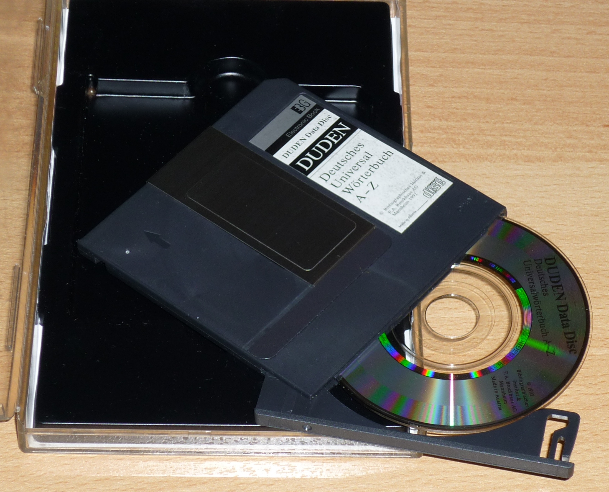
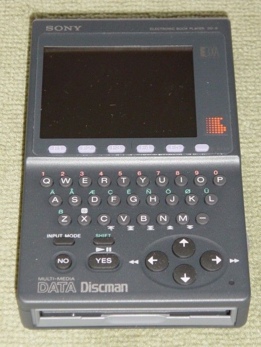

Sony Data Discman
The first dedicated e-book reader, three years before the word meant anything

Overview
The Sony Data Discman (DD-1, launched in Japan July 1990; the DD-1EX for Western markets in 1991-92) was the first purpose-built portable electronic book reader. It was not a computer you program — it was a book machine. Content arrived on 3.15-inch CD-ROM discs in Sony's Electronic Book (EB) format, each holding up to 100,000 pages or 32,000 images, and the device existed to search and display that content.
The interaction model is the strange, gentle part. A small QWERTY keyboard accepts search terms, and dedicated Yes/No keys drive a scripted, dialogue-style retrieval flow — the machine asks, you answer, the book opens. A grayscale 256x200 LCD showed 30 characters by 10 lines. Early models could not play audio files at all; later models could play audio CDs. Sony's Electronic Book Authoring System (SEBAS, licensed to publishers for $9,000) defined the EBG/EBXA formats, and more than 240 titles were eventually released: dictionaries, encyclopedias, travel references, and exactly one literary title.
In Japan it was a modest hit — 90,000 units in the first eight months — but the West bought very few. The DD-1EX now lives in the permanent collection of the Victoria and Albert Museum, and the DD-10EX appeared in the museum's 1995 exhibition 'The Book and Beyond: Electronic Publishing and the Art of the Book'.
Deep dive
Seventeen years before the Kindle, Sony shipped a dedicated reading device with replaceable media and a non-expert search interface. The prompt-driven Yes/No retrieval model was explicitly designed for people who had never touched a computer — you type a word and answer questions instead of learning a query language.
The 3.15-inch CD-ROM discs and the EB/EBXA formats (standardized with the Electronic Book Committee) were the real product. Sony sold the authoring system to publishers rather than trying to write the library itself — a $9,000 fee that became one of the key barriers to Western adoption.
Team & pioneers
- Sony Corporation. Designer and manufacturer of the Data Discman line.
- Electronic Book Committee / EBXA. Standardized the Electronic Book formats across manufacturers.
- Victoria and Albert Museum. Holds the DD-1EX in its permanent collection (W.11:1-13-2015).
Media


